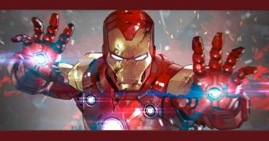

Homem de Ferro é um personagem de quadrinhos, criado por Stan Lee e Larry Lieber. Além da dupla de roteiristas, os desenhistas Jack Kirby e Don Heck, também fizeram parte do desenvolvimento. O personagem surgiu em 1963, como resposta a um desafio pessoal de Stan Lee. O roteirista queria desenvolver um personagem que pudesse ser odiado, para, então, ser amado pelo público.
O alter-ego do Homem de Ferro é o bilionário Tony Stark. Mas, antes de ser bilionário, Tony era apenas o filho único da família Stark. Com uma relação ruim com seu pai – Howard Stark -, ele acabou sendo enviado para um internato aos seis anos de idade. Em meio a estudantes do ensino médio, Tony acabou se destacando como gênio prodígio. Quando tinha 15 anos, Tony ingressou no programa de graduação do MIT, onde se tornou mestre em física e engenharia elétrica. Enquanto estudava, também conheceu outro jovem gênio: Bruce Banner. Ao longo da vida, Tony e Bruce desenvolveram uma grande rivalidade científica.
Aos 20 anos, Tony acabou se voltando para uma vida ociosa e nômade. Depois de se envolver com mulheres ligadas aos rivais de seu pai, Tony foi proibido de se relacionar e decidiu passar a curtir a vida viajando o mundo. Entretanto, aos 21 anos, precisou voltar para casa, depois que seus pais foram mortos e ele foi apontado como principal herdeiro das Indústrias Stark.
Com poucos anos de trabalho, Tony transformou a empresa num gigante complexo bilionário. Trabalhando principalmente com investimento em armamento e munições, ele acabou fazendo parte de uma apresentação no Vietnã. Durante o conflito militar no país, Tony acabou sendo vítima de um ataque de granada, mas sobreviveu. Apesar disso, ficou com estilhaços de explosivo próximos ao seu coração. Ao mesmo tempo, ele fora feito prisioneiro e forçado a desenvolver uma arma.
Mas, ao invés de desenvolver a arma para seu sequestrador, Tony acabou criando um dispositivo que o mantivesse vivo. Logo após garantir sua sobrevivência, também criou a primeira versão da armadura do Homem de Ferro e escapou. Desde então, Tony aperfeiçoou e desenvolveu novas versões da armadura, sempre com destaque para cores vermelho e dourado. Durante o início de suas aventuras, Tony Stark dizia que o Homem de Ferro era seu guarda-costas. Na época, apenas sua secretária, Virginia “Pepper” Potts, e Harold “Happy” Hogan conheciam seu segredo.
